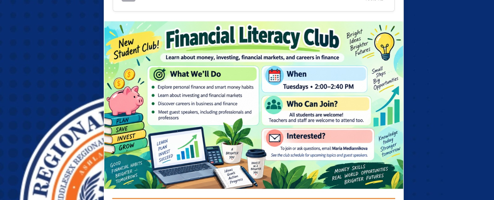

Financial
Literacy Club
A student-led extracurricular program at Keefe Regional Technical School connecting practical money skills, guest speakers, and career exploration.


Practical financial knowledge for real life.
The club focuses on budgeting, credit, taxes, college financing, investing, retirement planning, financial careers, and responsible financial decision-making. Weekly meetings combine student-friendly discussion with guest speakers from finance and academia.
Learn + Discuss
Student-friendly instruction, examples, and guided discussion.
Apply
Mini cases, simulations, budgeting exercises, and decision-making practice.
Connect
Guest speakers from finance, business, higher education, and public service.
Extend
College, career, and long-term financial planning connections.
Organized around four Massachusetts financial literacy areas.
Earning & Spending Income
Careers, compensation, budgeting, spending choices, paychecks, gross vs. net income, and taxes.
Saving Money
Banking, savings accounts, emergency funds, financial goals, and saving strategies.
Credit & Investments
Credit scores, borrowing, loans, interest, debt, investing fundamentals, diversification, and retirement planning.
Protecting Assets
Insurance, risk protection, fraud, scams, identity theft, cybersecurity awareness, and consumer rights.
The Massachusetts standards are used as an educational organizing framework. This does not imply DESE endorsement or formal curriculum approval.
Original club materials.
The first public version includes the current schedule, recruitment flyer, and curriculum alignment document.


Contact
Questions about the club, educational collaboration, or future guest speaker opportunities: